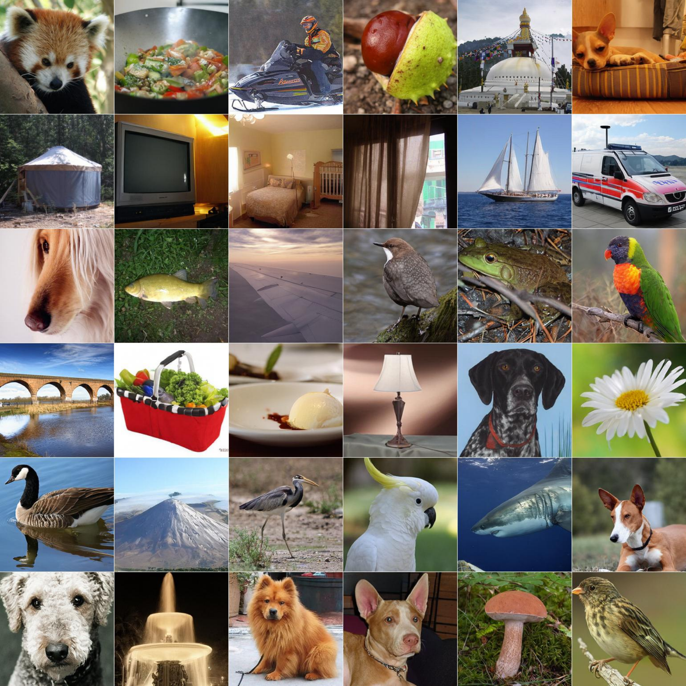

① 吸引 ATOWARD REAL
A = Σᵢ αᵢ (yᵢ − x)
= μ+ − x
= μ+ − x
每个真实样本给出一个“朝向它”的向量。分别乘上权重后相加，等价于走向真实样本的加权中心 μ+。
RAE 的语义表示很强，为什么却难以蒸馏？这项工作从潜空间几何出发，用 drifting 直接匹配分布，让预训练的生成模型学会一步输出。

论文真实生成样本 · Figure 2 · DiTᴰᴴ-XL
主结果采用 DiTᴰᴴ-XL + IDG（ω = 1.4），评估 50,000 张类别均衡样本。16 epochs 不包含预训练成本；NFE 不是端到端耗时。
RAE 用预训练表征编码器替代传统 VAE 编码器。它的特征有丰富语义，但“语义好”并不意味着“生成轨迹容易压缩”。
各向异性：RAE 的 PR 为 0.0630，SD-VAE 为 0.2068；在本文统计协议下，较小的 PR 表示谱更不均匀。
集中程度：RAE 的 NN-d 为 1.0664，SD-VAE 为 4.3083；最近邻距离按维度归一化，越小表示样本越集中。
两图为二维概念示意，不是实测轨迹或特征投影。统计按同类别、同 token 位置计算。§3.2 / Tables 1–2 ↗
关键转向：不再强求一步模型复现复杂的教师轨迹，
而是在语义潜空间中，直接学习目标分布。
从预训练 flow 模型初始化一步生成器。真实 RAE token 提供吸引，其他生成 token 提供排斥；在训练中更新模型，让输出分布逐步接近真实分布。
训练时：对生成 latent 直接施加 token-wise drifting loss，无需额外的 MAE 特征提取器。推理时：无需真实样本或训练用 drifting 场。
二维吸引–排斥玩具模型；动画表示训练中分布的变化，不是模型的多步推理，也不是实际生成结果。
同时使用吸引与排斥，让生成点靠近目标簇，并避免集中在少数位置。
下面三幅图使用完全相同的样本与坐标。深色点 x 是当前生成 token；所有其他点均对应同类别、同 token 位置。
绿色 yᵢ：真实样本
橙色 xₖ：其他生成样本
每个真实样本给出一个“朝向它”的向量。分别乘上权重后相加，等价于走向真实样本的加权中心 μ+。
先计算“朝向其他生成样本”的加权向量，再取负号。粗箭头因此背离它们的中心 μ−；x 自己不参与计算。
绿色吸引与橙色排斥按向量相加，得到紫色方向。它同时利用真实分布和当前生成分布的信息。
距离更近，权重通常更大。正样本和负样本各自归一化，两组权重分别和为 1。箭头贡献还要乘位移向量，所以“权重大”不等于“箭头一定最长”。
图中细箭头是单个加权贡献，粗箭头是组内合力；十字标记是加权中心。拖动 τ，可观察中心与合成方向的变化。
这里的 τ 是二维演示尺度（图上 100 单位为 1），不是论文实验超参数。图只展示基础场；实际训练还包含输入扰动、多温度损失平均等处理。
| 样本 | 距离 d | 权重 |
|---|
先归一化 Ṽ = V / ‖V‖（非零场），再构造固定目标 sg[x + Ṽ]。通过回归损失反向传播，更新生成器参数；并不是在推理时反复移动一个 latent。
A 与 R 可以部分或完全抵消。有限样本下，某一个点的 V ≈ 0 并不能单独证明两种分布已经一致。上面的 μ+、μ− 也会通过距离权重依赖当前 x。
移除额外的 y-softmax，对计算 drifting 场的生成样本加入小扰动。前者贴合势函数梯度的推导，后者改善训练稳定性。
每类 256 个正样本，对应 64 个可反传负样本与 192 个 detached 负样本。用更多样本估计分布，同时控制梯度存储。
CLS token 接受真实表征的 drifting 监督；另加 4 个不设显式目标的 register tokens，为 Transformer 提供额外容量。
对真实与生成样本做核平滑后，最优判别器的 logit 梯度是 ∇log q̂ − ∇log p̂。论文将 drifting 解释为这一方向的经验估计，并以此启发 softmax、扰动和样本数量的设计。严格公式会随核的形式带上距离因子；这是一种理论联系，并不意味着训练中额外引入了一个 GAN 判别器。Appendix A.2 ↗
Internal Drifting Guidance（IDG）从同一次前向传播的中间特征构造一个辅助输出，再沿“辅助输出 → 最终输出”的方向外推。
取第 8、14 层的特征，拼接后送入轻量投影头。用主干最终输出作为正样本，通过 drifting 训练这个 head，并在中间特征处截断梯度，避免影响主干。
论文默认使用 ω = 1.4。引导强度并非越大越好，实测指标呈先改善、后变差的趋势。
§3.4 / Figure 3 / Appendix B.3 ↗ω = 1.4：从 G 沿 G − P 再前进 0.4 倍。
这是向量运算示意，不模拟生成图像，也不插值或预测 FID。
在 ImageNet 256 × 256 类别条件生成上，Drift-RAE 将 RAE 生成器蒸馏为 1 NFE，并取得 1.48 FID。下面保留教师、RAE 基线和相关一步方法作为参照。
FID 越低越好 · 摘录自论文 Table 4
| 方法 | 空间 | NFE | FID ↓ | 训练 epochs |
|---|---|---|---|---|
| DiTᴰᴴ-XL · 预训练教师 | RAE | 50 | 1.13 | 800 |
| MF-RAE † | RAE | 1 | 2.03 | 41 |
| Drifting Model · L/2 | VAE | 1 | 1.54 | 1280 |
| FreeFlow-XL/2 † | VAE | 1 | 1.45 | 300 |
| Drift-RAE · DiTᴰᴴ-L † | RAE | 1 | 1.82 | 16 |
| Drift-RAE · DiTᴰᴴ-XL † | RAE | 1 | 1.48 | 16 |
† 为蒸馏方法，其 epochs 为蒸馏训练阶段。各方法的预训练成本、结构与训练设置不同，不能把 epochs 比直接解释为总算力或端到端速度比。Drift-RAE 的 FID 仍高于预训练教师，也未优于表中所有其他空间的方法。
FID ↓ · DiTᴰᴴ-XL · Tables 3 & 10
基线保留额外 y-softmax，正负样本数均为 64，FID 为 2.00。点击下方步骤，查看每项改动的作用。
这项工作的重点，是证明 RAE 的表示几何可以与 drifting 蒸馏形成互补，而不是宣称所有生成问题都已经能一步解决。
这里的一步模型从预训练 flow 模型开始。论文中，无额外 MAE、直接从零训练的 RAE drifting 配置尚未成功；decode–encode 变体改善到 7.04 FID，但仍有明显差距。
每次 drifting 更新依赖较多同类别正样本。在文本到图像等条件更开放的场景里，如何获得合适的样本集合、减少这种依赖，仍是待研究的问题。
§4.4 / Limitations ↗ · Appendix C ↗
RAE 提供语义空间。
Drifting 提供分布监督。
两者结合，让高质量一步生成成为可能。